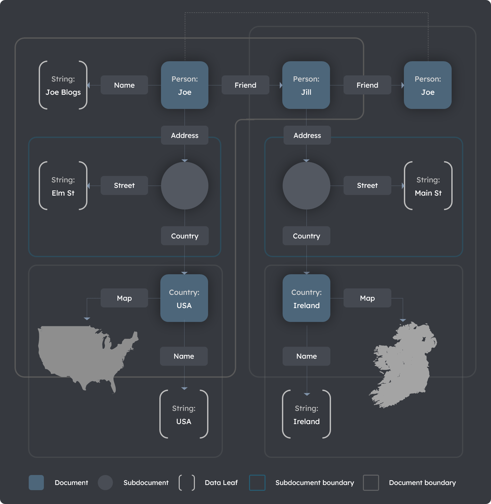

Documents Explanation
The TerminusDB document store
TerminusDB is a document store as well as a knowledge graph database. TerminusDB schemata describe how to interpret segments of graphs as self-contained documents.
TerminusDB storage structure
The underlying storage structure of TerminusDB is a labeled, directed, and edge-labeled graph. Each source and target node has a distinct name, and every edge has a name and a direction.
Graph segments as documents
Segments of the graph are documents. Documents can be extracted as JSON objects, providing a convenient data package for applications. JSON objects can be updated by submitting modified versions. The graph's entire document segment can be deleted by deleting the document. However, the full graph structure is retained, allowing sophisticated search and traversal.
Subdocuments overview
Documents can contain subdocuments. A subdocument:
- Is owned by its containing document.
- Is a segment of the graph which is solely pointed to by the containing document.
- Can have any number of outgoing links to other documents or subdocuments.
See the Subdocuments section for more information.
Simple documents
Documents are described by creating a class definition in the schema. The simplest document definition contains properties with data elements only.
A simple document example
The Football roster CSV file is loaded using the Football roster class definition below. This class definition describes the JSON document that can be submitted or retrieved from the graph.
A valid Football roster JSON document definition, which corresponds to a row in the CSV file, is also shown below.
Data: Football roster CSV file
name, position
George, Centre Back
Doug, Full Back
Karen, Centre Forward
Code: Football roster class definition
{ "@type" : "@context",
"@schema" : "terminusdb://Roster/schema#",
"@base" : "terminusdb://Roster/document" }
{ "@type" : "Class",
"@id" : "Player",
"name" : "xsd:string",
"position": "xsd:string" }
Code: Football roster JSON document definition
{ "@type" : "Player",
"@id" : "Player/George",
"@base" : "terminusdb://Roster/document",
"name" : "George",
"position": "Centre Back" }
The JSON document definition
The following table describes the properties of the JSON document definition above.
Table: Properties of the JSON document definition
| Property | Value | Description |
|---|---|---|
@type |
Player |
The type of data held - a football player |
@id |
Player/George |
The address of the document used for retrieval, update, or deletion, or as a reference used in other documents. If the address in @id is unambiguous, for example, when used in the same collection, then @id can be used as-is, i.e., as Player/George. Otherwise, the @base property is required. |
@base |
terminusdb://Roster/schema# |
The fully qualified address for Player/George expanding to terminusdb://Roster/document/Player/George. |
Unique document @id
It is important to ensure a unique document @id. The parameters @key and @base are available in the class definition, enabling you to use a calculated @id. Refer to the Schema reference for more information.
Documents with references
TerminusDB enables references to other documents, forming a graph of documents.
Create objects from data
The simple document example introduced above is convertible to an object that refers to each player, as demonstrated in the code-snippet Player and roster classes. In this snippet, the Roster class points to a Set of Players (or Player classes.)
The Set property
The Set property in the code-snippet is a type family allowing us to state that the player property can have any number of Players attached. Set does not provide ordering or multiplicity; a Player is either connected or not connected. For ordering and multiplicity, use @type List or Array.
Code: Player and roster classes
{ "@type" : "@context",
"@schema": "terminusdb://Roster/schema#",
"@base" : "terminusdb://Roster/document" }
{ "@type" : "Class",
"@id" : "Player",
"name" : "xsd:string",
"position": "xsd:string" }
{ "@type" : "Class",
"@id" : "Roster",
"player" : {
"@type" : "Set",
"@class": "Player" } }
Create documents from class specifications
A set of documents that meets the above specification and that represents the data in the Football roster CSV file can be defined as:
Code: CSV roster data in document form
{ "@type" : "Roster",
"@id" : "Roster/Wolves",
"player": [ "Player/George", "Player/Karen", "Player/Doug" ] }
{ "@type" : "Player",
"@id" : "Player/George",
"name" : "George",
"position": "Centre Back" }
{ "@type" : "Player",
"@id" : "Player/Doug",
"name" : "Doug",
"position": "Full Back" }
{ "@type" : "Player",
"@id" : "Player/Karen",
"name" : "Karen",
"position": "Centre Forward" }
The Roster points to the various Player documents. When requesting the document Roster/Wolves, each player in the player array is retrieved. Each identifier can be queried in a similar way to retrieve all associated documents.
Subdocuments
A subdocument can only be pointed to by its containing document. It is information internal to the identity of a document and not intended to be shared. This designation enables deeply nested JSON documents that are self-contained and retrievable using the TerminusDB document interface.
A subdocument example
In the subdocument example below, the schema specification defines players with a subdocument of stats. Stats is declared a subdocument using the @subdocument property and the special value []. Also, it has a Random key, meaning the key is automatically generated if not provided.
Code: An example of a player stats subdocument
{ "@type" : "@context",
"@schema": "terminusdb://Roster/schema#",
"@base" : "terminusdb://Roster/document" }
{ "@type" : "Class",
"@id" : "Stats",
"@subdocument": [],
"@key" : { "@type" : "Random" },
"strength" : "xsd:integer",
"intelligence": "xsd:integer",
"dexterity" : "xsd:integer",
"charisma" : "xsd:integer",
"wisdom" : "xsd:integer",
"constitution": "xsd:integer" }
{ "@type": "Class",
"@id" : "Player",
"name" : "xsd:string",
"stats": "Stats" }
In the example below, the subdocument enables sending and retrieving Stats with the Player object. It is also possible for subdocuments to point recursively to other subdocuments or documents.
Code: Stats with the player object
{ "@type" : "Player",
"@id" : "Player/Hieronymous",
"stats" :
{
"@type" : "Stats",
"strength" : 14,
"intelligence": 10,
"dexterity" : 14,
"charisma" : 8,
"wisdom" : 12,
"constitution": 9
}
}
Visualizing the Graph
Documents and subdocuments, and references to other documents, provide the best of both worlds: document storage and knowledge graphs. However, visualizing what this means requires a bit of experience.
A graph visualization example
The following Contact graph diagram illustrates the boundaries around what constitutes a document and a subdocument.
An example schema representing this scenario is provided in the code-snippet Contact graph schema further below with an example of a corresponding Contact graph document definition.
With a bit of practice, designing your knowledge graphs in TerminusDB will become second nature.
Diagram: Contact graph

Code: Contact graph schema
{ "@type" : "@context",
"@schema": "terminusdb://Roster/schema#",
"@base" : "terminusdb://Roster/document" }
{ "@type" : "Class",
"@id" : "Coordinate",
"@subdocument": [],
"@key" : { "@type" : "Random" },
"lat" : "xsd:decimal",
"long" : "xsd:decimal" }
{ "@type" : "Class",
"@id" : "Map",
"coordinates": { "@type" : "Array",
"@class": "Coordinate" } }
{ "@type": "Class",
"@id" : "Country",
"name" : "xsd:string",
"map" : "Map" }
{ "@type" : "Class",
"@id" : "Address",
"@subdocument": [],
"@key" : { "@type" : "Random" },
"country" : "Country",
"street" : "xsd:string" }
{ "@type" : "Class",
"@id" : "Person",
"name" : "xsd:string",
"address": "Address",
"friend" : "Person" }
Code: Contact graph document
{ "@type" : "Person",
"@id" : "Person/Joe",
"name" : "Joe Bloggs",
"address": { "@type" : "Address",
"@id" : "Adress/aa1264e404a5b34381abc37cad83fabd",
"street" : "Elm St.",
"country": "Country/USA" },
"friend" : [ "Person/Jill" ] }
{ "@type" : "Person",
"@id" : "Person/Jill",
"name" : "Jill Smith",
"address": { "@type" : "Address",
"@id" : "Adress/5fba7438dc2b23258d304bb8cd1222bd",
"street" : "Main St.",
"country": "Country/Ireland" },
"friend" : [ "Person/Joe" ] }
{ "@type" : "Country",
"@id" : "Country/USA",
"name" : "USA",
"coordinates": [ ... ] }
{ "@type" : "Country",
"@id" : "Country/Ireland",
"name" : "Ireland",
"coordinates": [ ... ] }